Cleans up low-resolution or blurry images into a higher resolution with sharper detail. Use it when you need to bring photos, AI-generated images, product shots, or portraits up to delivery-grade quality. Combined with Face Enhancement, it restores eye, skin, and facial contour detail more reliably on images that include a face.
Scale a small source up to 2X or 4X while reducing aliasing and blur, so the output is ready for content delivery as-is. Especially useful when the original shot is small, when a generated image is slightly mushy, or when facial detail is lacking.
Click the Upscale icon in the left sidebar to enter the Upscaler. Pick the upscale model in the Models dropdown at the top, then upload an image in the area below.
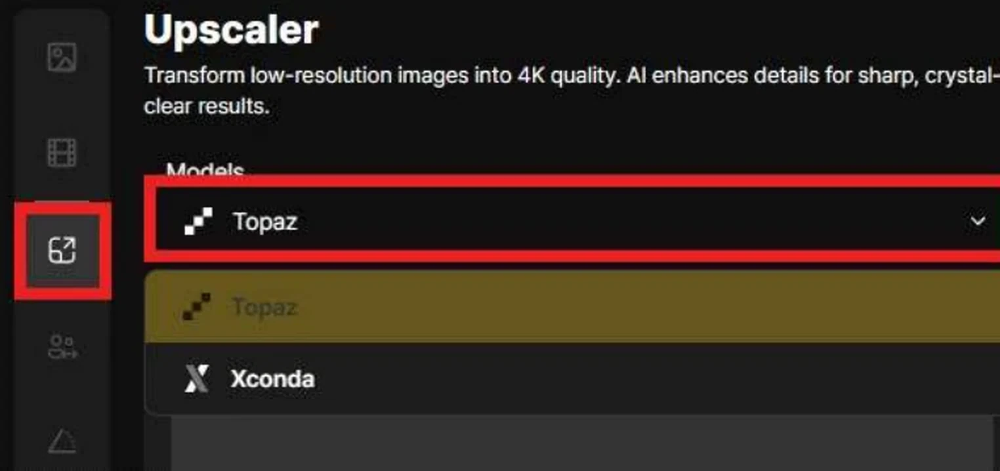
The Models dropdown lets you choose between Topaz and Xconda. Topaz exposes scale, Enhance Model, Subject Detection, Output Format, Face Enhancement, and Creativity. Xconda runs the in-house Xconda upscale model.
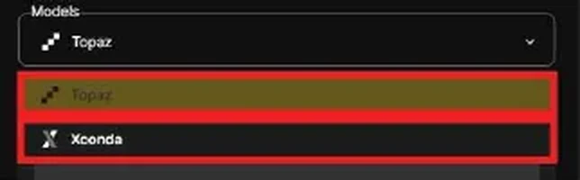
Selecting Xconda runs the upscale through Xconda's in-house model. Fewer options than Topaz — use it when speed is the priority.
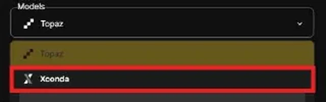
Drop the source image into the Drop Image Here / Click to Upload area. After upload, a preview appears in the left panel — the X in the top-right corner removes it.
2X doubles the source size; 4X quadruples it. Pick 2X for web previews; pick 4X for large screens or high-resolution delivery.
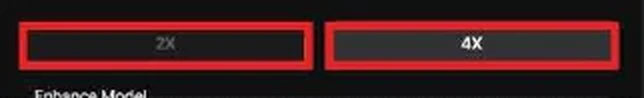
Pick the enhance model that matches the source. Options like Standard V2, Low Resolution V2, CGI, High Fidelity V2, and Text Refine steer the correction direction by source type.
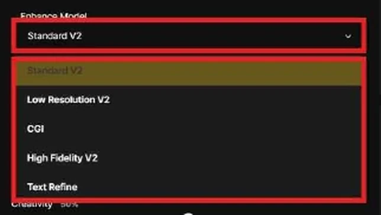
Specifies which region the correction is anchored to. Foreground centers detection on the foreground subject — ideal for people or products that sit cleanly apart from the background.
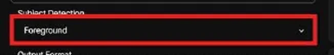
Pick the save format for the result. JPG is lightweight and good for general sharing; PNG is better when you need transparency or further editing downstream.
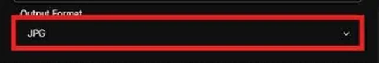
Restores sharpness in eyes, nose, mouth, skin, and facial contours for images that contain a face. Higher values restore more aggressively; lower values keep more of the original feel. This is the core option for portrait work.
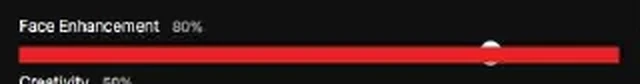
Controls how much new interpretation the model brings to the upscale. Low values preserve the source; high values are more aggressive in reconstructing texture and detail.
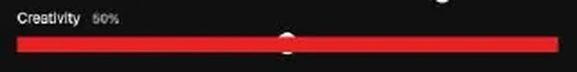
Once settings are set, press Generate to start the upscale. The credit cost appears to the right of the button — 8 credits in the current example.
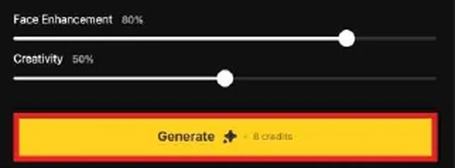
Pressing Generate opens the "Would you like to generate an image?" confirmation. OK starts the actual generation; Cancel returns to the settings screen.
When generation completes, the upscaled image appears in the Latest Result area on the right. The Download icon at the top-right saves it; Delete clears unwanted results. History below keeps prior generations for re-review.
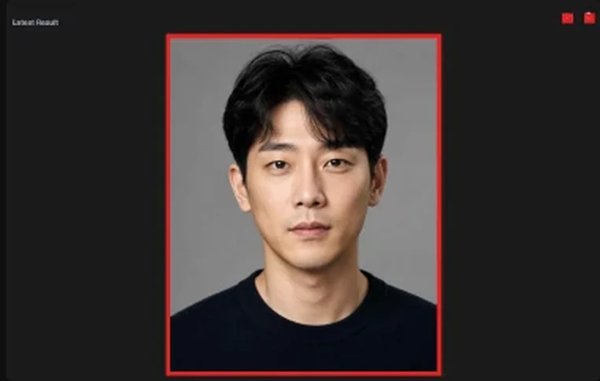